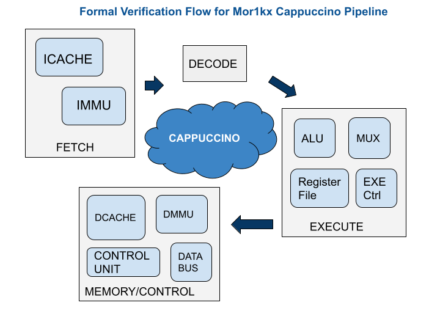

Getting started with Mor1kx formal
This summer, I have got an opportunity to work with the FOSSI organization as part of Google Summer of Code 2021. I will be working on formal verification of OpenRISC's mor1kx processor.
Formal Verification
Wondering What's Formal Verification? Why is it needed? Well, it's one of the popular verification techniques used to prove the correctness of the design using mathematical models. It covers different possible states of DUT and its results are valid for all test cases.
What's the stability of mor1kx? Is it bug-free? Answers to such questions are the end result of formal verification. In this blog, I will describe the approach that I will follow to formally verify mor1kx.
Short Description on Mor1kx
Mor1kx processor is highly configurable and supports multiple pipeline implementations like Cappuccino, Espresso, and Pronto Espresso. Cappuccino has five pipeline stages whereas Espresso and Pronto have two pipeline stages. To begin with, I first plan to verify the pipeline stages of cappuccino. Approximately, there are around 15 modules that have to be verified to check their correctness.
Project Approach
Getting started by referring to the ISA reference manual, formalizing it, and turning that into a mathematical characterization of correctness to show that the processor behaves the same way as its ISA spec in terms of allowable input and output behavior which is seen outside the processor. I will first prove the small pieces or submodules of the processor and then hierarchically move towards the entire processor. The plan is to divide the entire work into a few stages. Like the one, you can see here!

The fetch stage includes several modules which comprise instruction cache, dpram, and memory management modules. I will first formally verify these main modules along with their submodules, and then verify the entire Fetch stage. This is followed by the decode stage verification and then the execution stage where I need to verify ALU, register file, data line selector, and execution control modules. Finally, data cache, control unit, data bus, and data memory management modules will be verified during the memory stage. All the proved verification stages are integrated to verify cappuccino mor1kx as a whole.